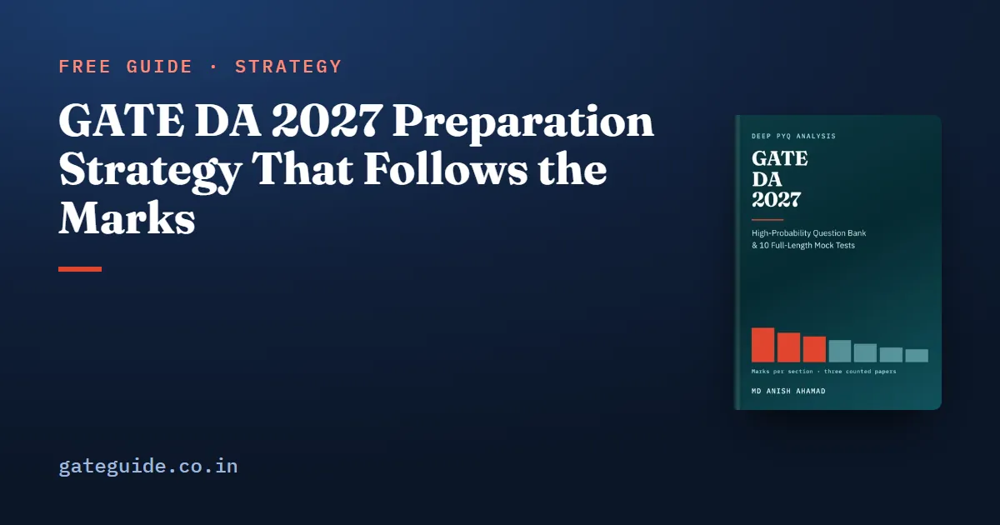

GATE DA 2027 Preparation Strategy That Follows the Marks

The best GATE DA 2027 strategy follows the marks. Secure the topics that every paper so far has examined, then read the named topics no paper has used, then move to timed mocks. This guide builds that plan from the counted record of the three DA papers, explains the order it uses and why, and shows how to split your hours.
In this guide
- Key takeaways
- Three ideas the plan rests on
- Stage 1: learn in the order the marks are in
- A week inside Stage 1
- Stage 2: the named topics no paper has used
- Stage 3: spend the three real papers carefully
- Stage 4: mocks and the last fortnight
- General Aptitude runs through every stage
- Check the calendar
- Quick revision
Key takeaways
- Probability and Statistics and Programming carried 103 of the 255 counted technical marks. The top four sections carried 180.
- General Aptitude was 15 marks in every paper. Give it an hour a week from the first week.
- Learn Linear Algebra early, ahead of its own weight, because Machine Learning is built on it.
- Twenty-one technical topic groups appeared in all three papers and carried 155 of the 255 technical marks. They come first.
- Then give the named-but-unset topics a dedicated week; past papers will never make you meet them.
- Start full mocks once four or five sections are done, and analyse each one by section.
Three ideas the plan rests on
A counted mark is a mark from the 2024, 2025 or 2026 DA paper, placed in a section of the 2027 syllabus by the GATE DA 2027 book using the official key. A topic group is a cluster of related syllabus phrases inside a section. An always-asked group is one that drew marks in all three papers.
The plan uses these to decide three things: the order of sections, the order inside each section, and how to spend the three real papers.
Remember: Three papers show patterns, not trends. The plan follows what keeps recurring, and it treats every mean as the centre of a wide band.
Stage 1: learn in the order the marks are in
The section means over the three papers set the broad order. The book makes one change for dependency: Linear Algebra moves up.
| Order | Section | Mean marks | Why here |
|---|---|---|---|
| 1 | Probability and Statistics | 18.3 | Largest; its methods recur in three other sections |
| 2 | Linear Algebra | 10.0 | Moved up: PCA, ridge and discriminants rest on it |
| 3 | Programming, Data Structures and Algorithms | 16.0 | Mostly code tracing; needs daily practice |
| 4 | Machine Learning | 13.7 | Steadiest technical section, 12 to 15 |
| 5 | Database Management and Warehousing | 12.0 | Ranged 7 to 18 |
| 6 | Search, logic, reasoning under uncertainty | 8.0 | Short and fully examined |
| 7 | Calculus and Optimization | 7.0 | Small, but used inside Machine Learning |
Inside each section, work down its topic table from the heaviest group. One more rule from the book: within the top four, start with your weakest, not your strongest. The marks you do not have yet are the only ones left to gain.
Worked example: splitting 200 hours by marks
Suppose you have 200 hours for the technical sections. Give each section a share in proportion to its mean out of 85:
For Probability and Statistics that is hours. The full split, rounded, is 43, 38, 32, 28, 24, 19 and 16 hours for the seven sections in weight order, which adds back to 200.
This is a starting point, not a rule. Add hours where you are weak, and add a few to Linear Algebra because it pays twice.
Trap: Do not cut Calculus to almost nothing because of its 7-mark mean. It carried 11 marks in 2025, and its skills appear inside Machine Learning questions counted elsewhere.
A week inside Stage 1
The book gives a concrete weekly shape.
| Day | Work |
|---|---|
| 1 to 4 | One new topic a day, taken in order of weight; twenty minutes of code tracing every day |
| 5 | Practice questions on the four topics just covered |
| 6 | One hour of General Aptitude; last week's wrong answers re-attempted cold |
| 7 | A timed mixed set across the sections already learned, or rest |
Keep an error log from day one. Classify every wrong answer as a misread, a wrong formula, an arithmetic or tracing slip, or not known. Each needs a different fix.
Stage 2: the named topics no paper has used
The syllabus did not change, so there are no new topics to chase. There is a different gap. Some named topics have drawn no counted question in three papers:
- confidence intervals and the z, t and chi-squared tests;
- LU decomposition;
- linked lists;
- smaller items such as mergesort, multiple linear regression, k-fold cross-validation and the data transformations of discretisation, sampling and compression.
None of these can be practised from past papers. They are short. The book's recommendation is one dedicated week in the middle of the plan, plus a half-day revisit in the last month.
In one line: A zero in three papers says the topic has not been asked yet, not that it will not be asked.
Stage 3: spend the three real papers carefully
The three DA papers are 195 real questions, and there are no more. The book's advice:
- Sit the 2024 paper early, timed, before you know much. It shows you the question shapes.
- Hold 2025 and 2026 back until four or five sections are learned. Sit them as full timed papers.
- Afterwards, go through them question by question. Every question is on the current syllabus, so all of them are usable.
Stage 4: mocks and the last fortnight
Begin full mocks once four or five sections are learned. Follow every paper with an evening of diagnosis, and compare section by section across papers, never total against total.
Practise multiple-select questions as four separate true-or-false statements. The marking scheme guide, common to every GATE paper, explains why one wrong tick scores zero. Train with the on-screen calculator using the virtual calculator guide.
In the last fortnight, stop learning new topics, except the short named ones from Stage 2. In the last week, revise from your formula sheet and error log, and sit one paper to keep the three-hour rhythm.
General Aptitude runs through every stage
General Aptitude was ten questions and exactly 15 marks in every DA paper, all multiple choice. An hour a week from the first week is the best-evidenced trade in the plan. The General Aptitude preparation guide covers what to practise.
Check the calendar
GATE 2027 runs on 6-7, 13-14 and 20-21 February 2027, with results on 19 March 2027. The exam dates guide has the schedule; confirm your paper's date on the official portal.
This guide gives the plan's shape and order. The GATE DA 2027 book gives the topic tables for every section, 907 questions to work through, ten full mocks and the staged revision plan in full.
Quick revision
- Order: Probability, Linear Algebra, Programming, Machine Learning, Database, Section 7, Calculus.
- Start with your weakest of the top four sections.
- Always-asked groups first: 21 technical groups, 155 of 255 marks.
- One dedicated week for the named topics no paper has set.
- 2024 paper early; 2025 and 2026 held back as timed papers.
- Mocks after four or five sections; compare by section, not total.
- General Aptitude every week from the start.
Frequently asked questions
How should I start preparing for GATE DA 2027?
Start with the counted marks, not the syllabus order. Probability and Statistics and Programming together carried 103 of the 255 technical marks in the three papers, so begin there, and give General Aptitude a weekly slot from the first week. Start with your weakest of the four heaviest sections rather than your favourite.
Which subject should I study first for GATE DA?
Probability and Statistics, the largest technical section on the counted record with a mean of 18.3 marks. Its methods also decide questions in Machine Learning, Database and the search and reasoning section. Move Linear Algebra up early as well, because principal component analysis and regression in Machine Learning are built on it.
Can I skip any topic for GATE DA 2027?
Not on the evidence. The 2027 syllabus dropped nothing, and no counted mark fell outside it. Topics never asked so far, such as confidence intervals, LU decomposition and linked lists, are named and short, so give them a careful reading rather than skipping them.
When should I start mock tests for GATE DA?
Once four or five sections are learned. Sit the 2024 paper early as a map of the question shapes, hold 2025 and 2026 back as full timed papers, and follow every mock with an evening of diagnosis. Compare your section scores across papers rather than totals.
How much time should I give General Aptitude in GATE DA?
About an hour a week from the first week is the book's recommendation, against the 15 marks General Aptitude carried in every counted paper. It is the only block of the paper with no variation, so leaving it to the last month throws away the most reliable marks.
Sources
- GATE 2027 official website (IIT Madras)
- GATE 2027 DA syllabus PDF (IIT Madras)
- GATE 2024 DA question paper (IISc Bengaluru)
Dates, fees and the syllabus are set by the GATE 2027 organising institute and can change. Always confirm at gate2027.iitm.ac.in.